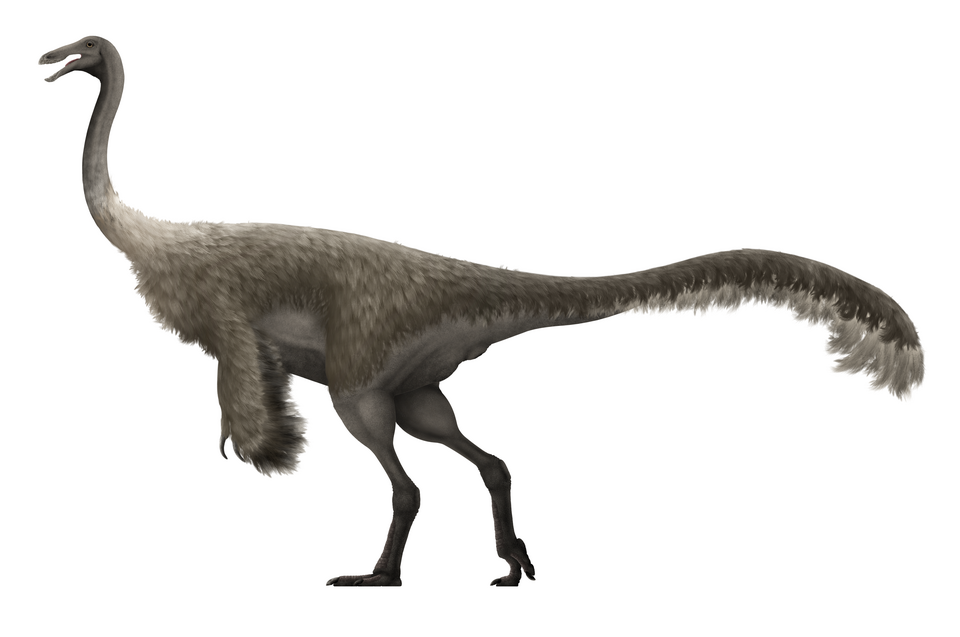

Galimimo
Gallimimus bullatus
Período
Viveu durante o período Cretáceo, há aproximadamente 70 milhões de anos.
Alimentação
Provavelmente era onívoro e se alimentava de plantas, insetos e pequenos animais.
Características
Tinha pernas longas, pescoço comprido, cabeça pequena e bico sem dentes, e se parecia com um avestruz.
Curiosidades
- Seu nome significa “imitador de galinha”.
- Seus fósseis foram encontrados no deserto de Gobi, na Mongólia.
- Acredita-se que fosse um corredor muito rápido.